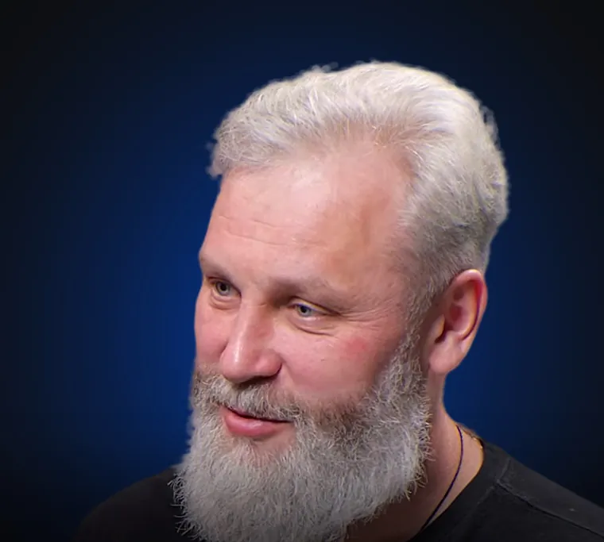
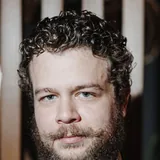
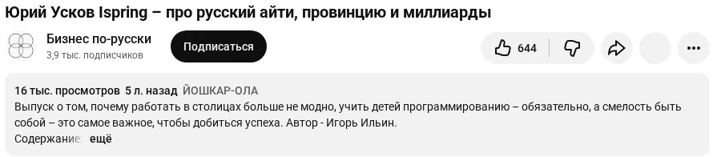
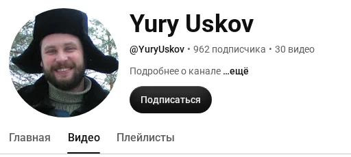
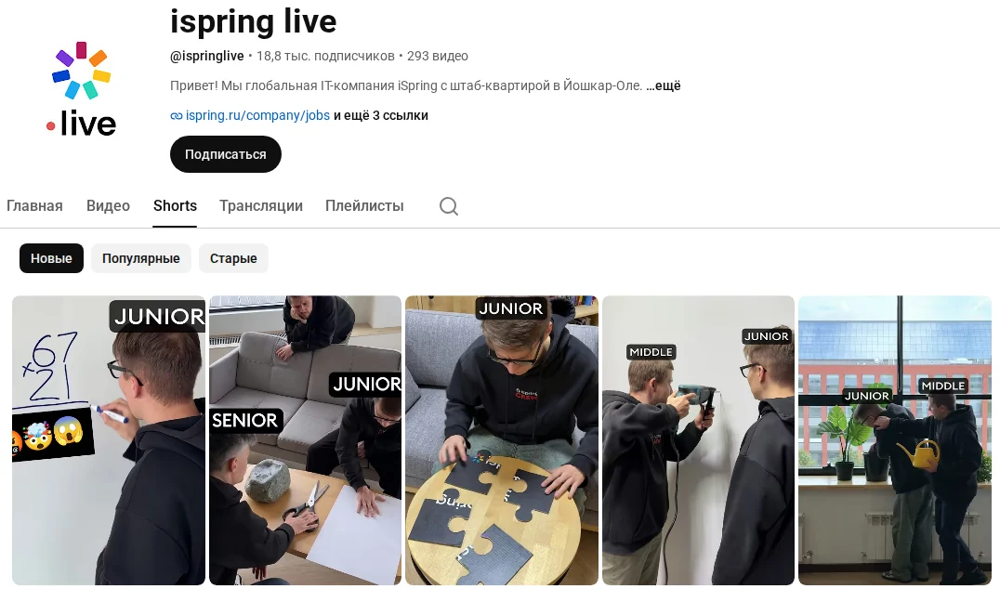
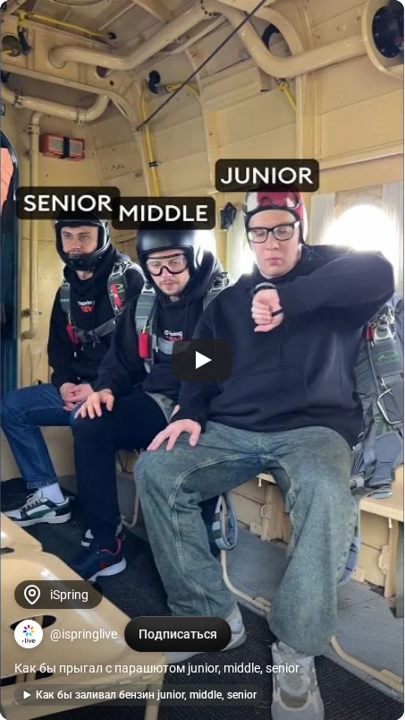

Юрий Викторович,предлагаю запустить проект: Ваш личный бренд в YouTube и Instagram.
Чтобы Вас смотрели миллионы людей по всей стране. На первых шагах от Вас не потребуется ничего, кроме согласия и бюджета на реализацию. Съёмки, монтаж, обложки, публикация - всё делаем мы из того, что уже снято.

Откуда я Вас знаю
В 2020 году со съёмки Вашего интервью начался канал «Бизнес по-русски».
Тот выпуск вышел первым на канале (15 января 2021) и собрал 15 998 просмотров. С тех пор я снял и смонтировал десятки предпринимателей, а Ваш разговор помню до сих пор. Поэтому я вернулся к нему первым, когда решил показать, что можно сделать из уже снятого.

Где Вы сейчас
29 интервью, 27 часов разговора, 247 тысяч просмотров.
Столько Вы дали на чужих каналах с 2020 года. Для подкастов это хорошо. Для человека, который построил вуз за миллиард и хочет 5 000 студентов со всей страны, - мало. Больше половины просмотров (153 тысячи) - одна беседа у Екатерины Сокальской, у неё 471 тысяча подписчиков. Остальные 28 выпусков вместе - 94 тысячи.

Ваш личный канал: 962 подписчика, 30 видео, ни одного короткого ролика.
Формат уже работает в Вашей компании
Короткие ролики iSpring собрали 35,9 миллиона просмотров. Вас в них нет.
Канал ispring live: 168 коротких роликов, 35,9 миллиона просмотров, лучший - серия «junior, middle, senior» - 14,7 миллиона. Институт iSpring: лучший короткий ролик - 2,8 миллиона. Роликов с Вами - 18 за четыре года, лучший - 132 514 просмотров («Программирование - это самая сложная инженерная специальность», февраль 2026). Аудитория, алгоритм, формат - всё уже есть. Нет системы, которая выпускает ролики с Вами.


Потому что 18 роликов за четыре года, без системы.
Как набираются просмотры
Каждый короткий ролик - отдельный вход к новым людям.
Длинное интервью смотрят те, кто уже пришёл на канал. Короткий ролик YouTube Shorts и Instagram Reels сами показывают людям, которые Вас не знают: алгоритм подбирает зрителя по теме, обложке, описанию и хештегам, а дальше смотрит, досматривают ли. Досмотрели - показывает шире. Поэтому сто роликов - это сто попыток попасть к новой аудитории, и каждая работает годами. Из одного часового подкаста выходит 10-20 таких роликов. У Вас записано 27 часов.
Кто должен Вас знать
Вас должны знать подростки и студенты, родители и учителя, общественники по всей стране.
Сейчас Вас слышат те, кто ходит на подкасты про ИТ. Этого мало для цели «5 000 студентов к 2032 году» и для миссии «сделать Россию лидером мировой ИТ-индустрии».
Уже сделано: пять роликов из одного подкаста
Я взял один Ваш подкаст и сделал пять роликов. Выкладывайте хоть сегодня.
Подкаст iSpring о вузе за миллиард, 1 час 40 минут. Из него - пять вертикальных роликов с титрами, обложкой, названием и описанием. Нажмите - посмотрите. Скачайте - они Ваши, без условий.
1 Кандидат отвечал на собеседовании с подсказками нейросети. Как его поймали
2 Больше миллиарда в свой институт. Когда это окупится? Никогда
3 Планировать судьбу ребёнка - забота или насилие?
4 Откуда у человека берётся объём для больших проектов
5 Почему вуз сегодня - не всегда высшее образование
листайте обложки вбок
«Пять - это образец. Дальше - система.»План: первая волна из уже снятого
600 роликов из того, что уже снято.
- Сначала Ваши каналы и каналы компании: выступления, лекции, эфиры.
- Затем 29 подкастов, где Вы были гостем, - 27 часов материала.
- Из 27 часов - около 600 роликов.
- Каждый ролик - в YouTube и в Instagram: две площадки из одной нарезки.
- У каждого - обложка, название, описание и хештеги по системе рилсмейкеров: так алгоритм понимает, кому показывать, и канал «прогревается» - показ расширяется с каждым досмотренным роликом.
- Канал: новый личный или существующий «Yury Uskov». Рекомендую личный: 962 подписчика - стартовая точка, а не помеха, и бренд остаётся Вашим, а не корпоративным.
- Отдельно - ролики из записей, которые так и не вышли: у любого канала они лежат.
Вторая волна: снимаем под то, что сработало
Через два месяца мы знаем, какие темы смотрят. Тогда снимаем новое.
Первая волна - разведка: 600 роликов покажут, какие Ваши темы досматривают и кому. По ним строим канву тем и формат под миллион: короткие записи, по 2-4 часа в неделю, на те вопросы, которые уже собрали зрителей. Здесь впервые понадобитесь Вы - на 2-4 часа в неделю перед камерой. До этого - нет.
Что от Вас и чего не от Вас
От Вас - согласие. Остальное - наша работа.
Не потребуется
- времени на съёмки
- тем
- текстов
- согласования каждого ролика
Потребуется
- «да»
- доступ к каналу (или заводим новый)
- а на второй волне - 2-4 часа в неделю
Честно о цифрах: просмотры числом не обещаем - этого не может никто. Обещаем ролики, систему и счёт: сколько вышло, сколько посмотрели, откуда пришли. Раз в месяц - разбор и решение, продолжать ли.
Instagram - только публикация Ваших роликов; платного продвижения там не ведём.
Первый шаг и цена
Первый шаг: 100 роликов из уже снятого - 49 000 рублей.
490 рублей за ролик. Пять уже у Вас - остальные 95 после «да». После первой сотни смотрим цифры вместе и решаем, идём ли дальше: ничего не теряете - ролики остаются Вашими в любом случае.
Напишите мне в Telegram или позвоните - отвечу в тот же день.
Telegram: https://t.me/ingvarcrypto · +7 916 645-73-81